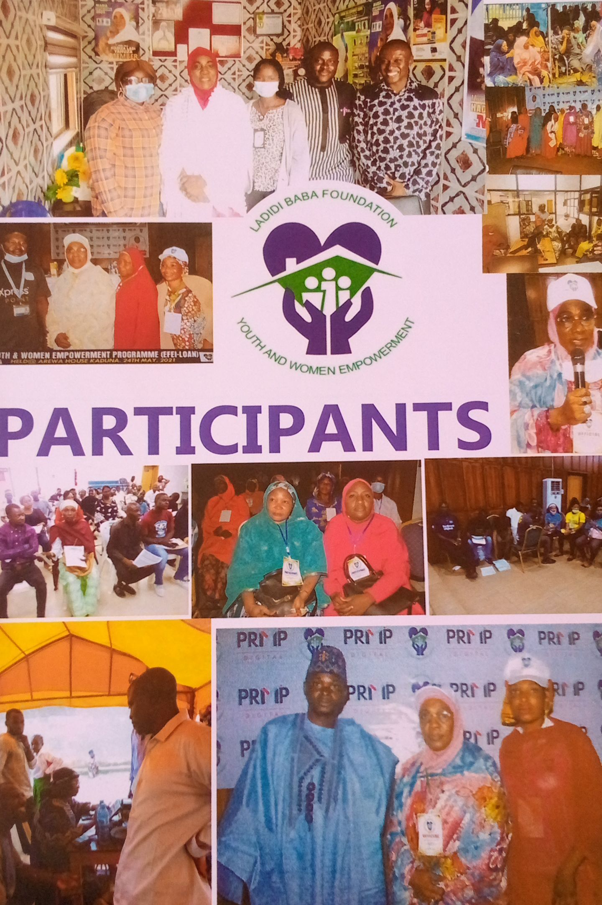
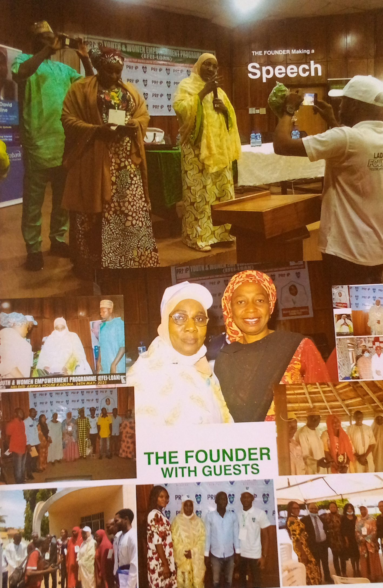
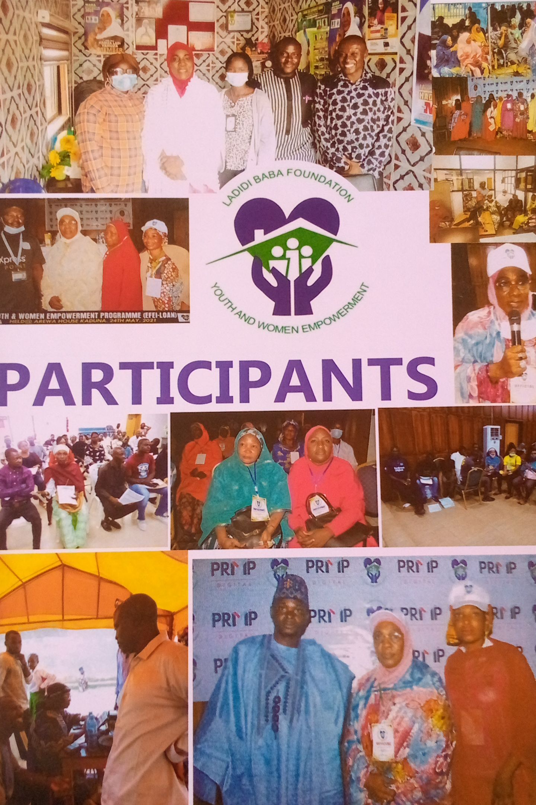
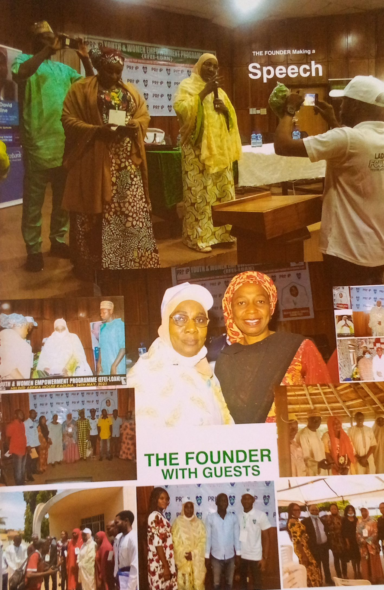
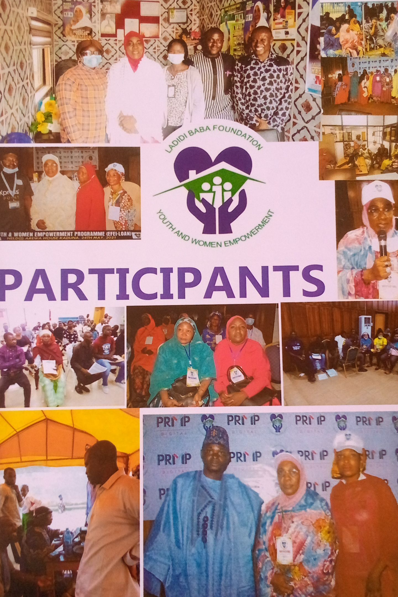
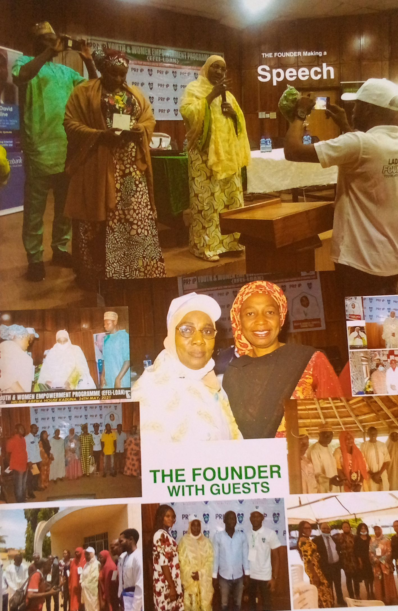
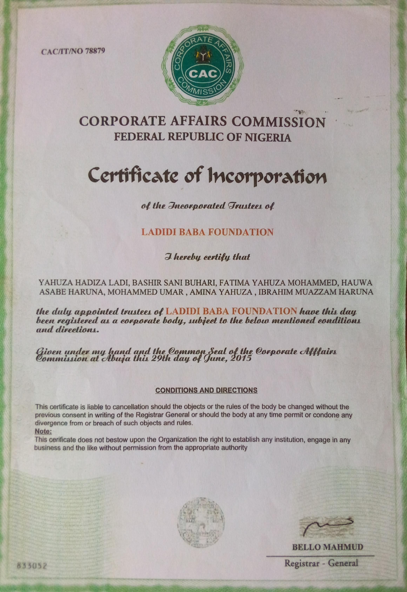

Our Work in the Community
 



Ladidi Baba Foundation is a registered non-profit organization committed to empowering women and youth through education, skills development, and community engagement.


Ladidi Baba Foundation is a duly registered non-profit organization with the Corporate Affairs Commission (CAC) of Nigeria.
